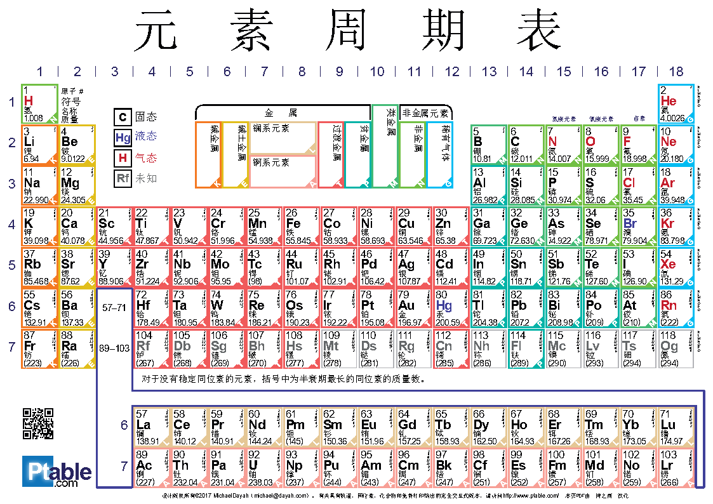
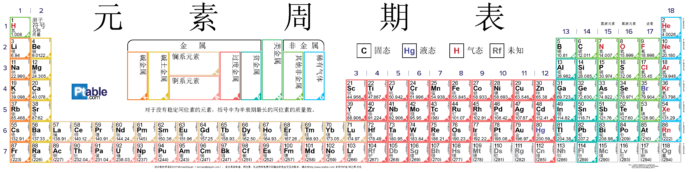
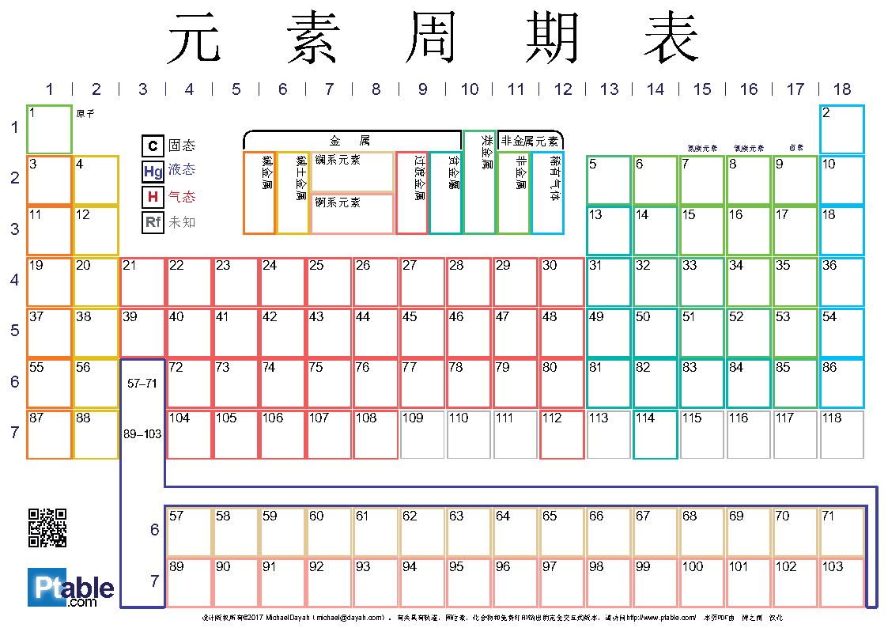
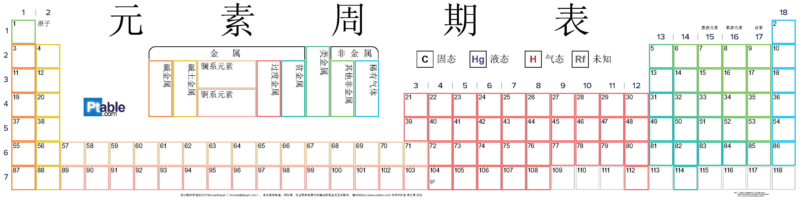
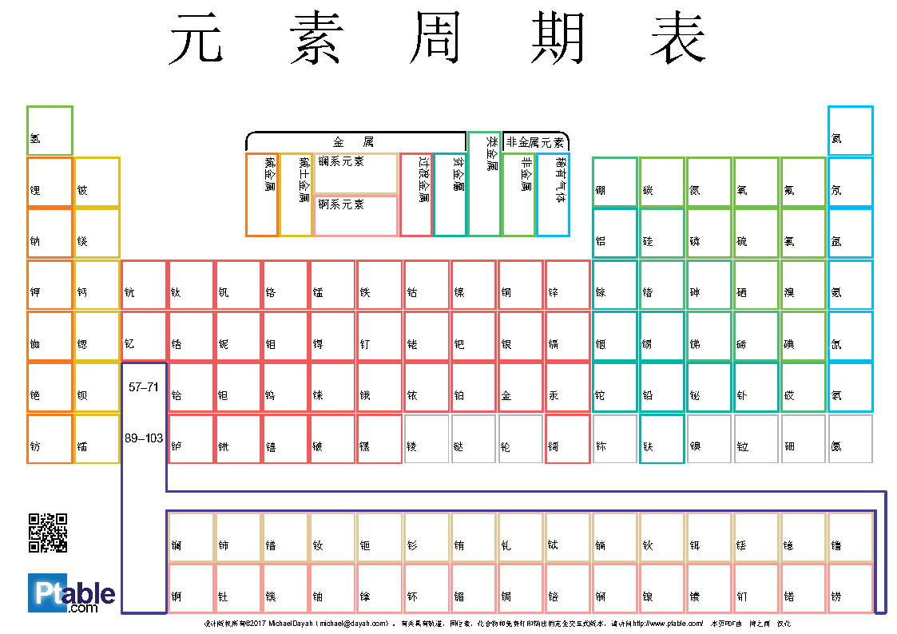
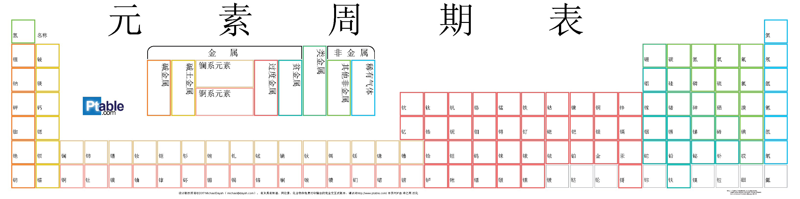
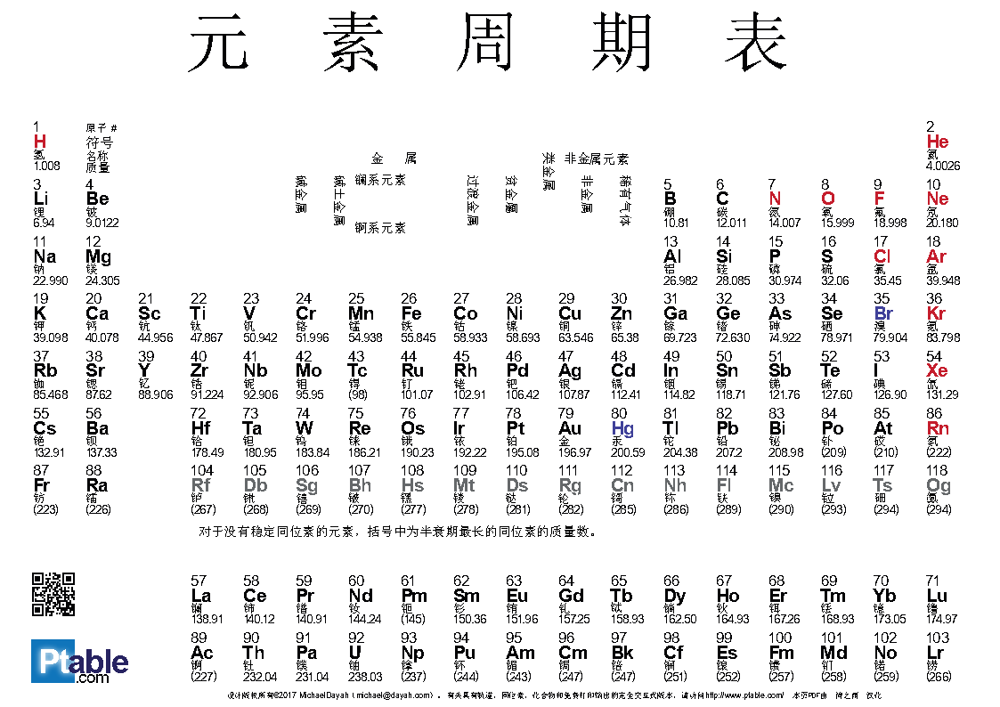
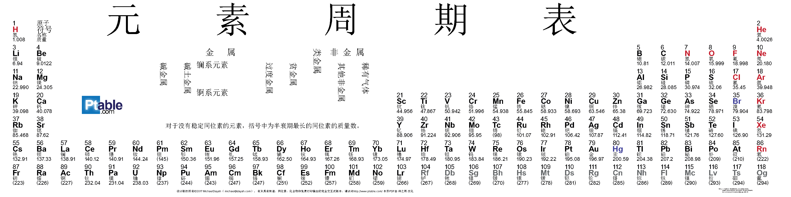

最新元素周期表PDF和宽元素周期表PDF支持分层显示，
因此您可以精确选择要打印的内容。
注：
1.上述两个为汉化后的，原版英文的PDF为元素周期表PDF（英文原版）和宽元素周期表PDF（英文原版）
2.界面经过修改，图片经过替换，上图为普通视图，下图为宽示图，原版为压制在同一个pdf的不同层次中，为了方便大家使用，特意拆分出来，点击图片下载对应的版本。
- 隐藏不必要或不适当的信息
- 通过隐藏名称或类别来创建测验
- 讲义只能在考试期间提供必要的信息
- 填写工作表，供学生建立自己的周期表
- 彩色轮廓而不是实心填充块可以节省墨水
- 元素框角中的字母显示类别，因此黑白打印不会丢失任何信息
只需在支持图层的PDF阅读器中打开文件并开始自定义即可!

显示所有图层以获得完整视图，包括组，句点，图例，彩色轮廓，角（用于黑白打印），以及通常的原子序数，重量，符号和名称。


隐藏元素名称和符号，并要求学生填写表格。 即使我对此也有麻烦。


您可以仅按类别中元素的符号填写所有十个类别的名称吗？


哪些元素属于哪些类别？ 使用彩色标记以相同的颜色勾勒出元素及其类别的轮廓。
